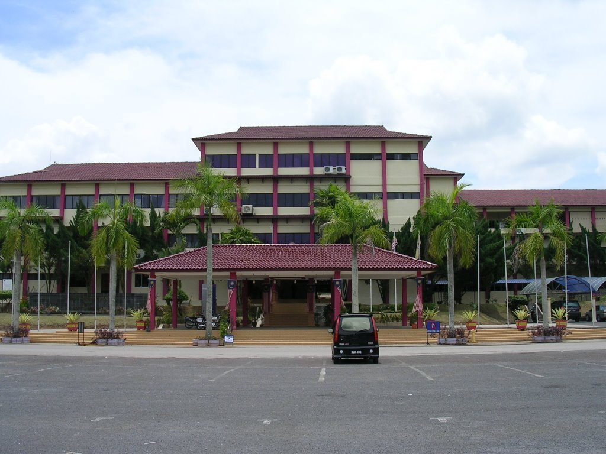
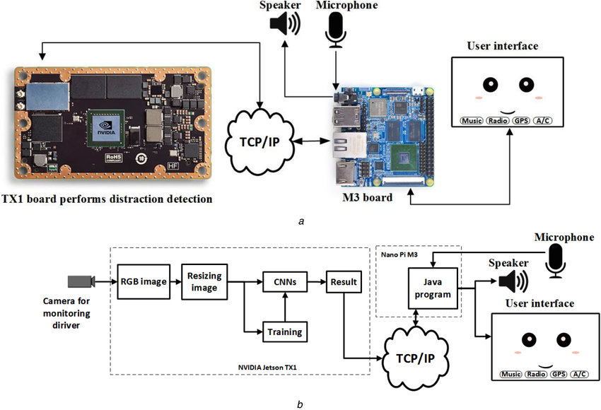
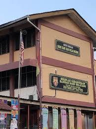
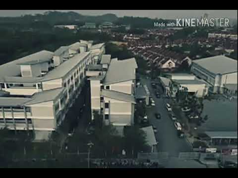

Hello and welcome to my E-Portfolio my visitor!! As the introduction in previous page,
this page will provide full information about me. If you haven't visit my introduction page, you can click here.
My Name is Muhammad Arief Nazaruddin Bin Ismail, 20 years old from Rawang, Selangor but studies at Universiti Telnologi Mara, Johor branches, Segamat Campus located in Segamat,
Johor with 2 and ½ years in Diploma Computer Science.

UiTM SEGAMAT, JOHOR
I am the type of person who like to know everything and gain new knowledge in this world but I more interested in technology that worked in this world, thats why
I choose to studies in Computer Science. Honestly, I am more interested in hardware computing but Computer Science offered software computing which I consider quite good
knowledge to gain but of course for me hardware computing is better because we can see what we about to do. Maybe I can get the chance to study about hardware computing
if i futher my studies in the next level or I can ask my friend to teach me since he studies in Electronic Computer Engineering which almost of the syllabus about
hardware computing.Learn about my obession here

example of hardware computing
Before entered University life I used to study in Sekolah Kebangsaan Bandar Baru Selayang (SKBBS) which is my primary school from 2007 until 2012 that take place 1st
grade until 6th then my family decided to move out from Selayang to Rawang in 2013. After that I have to continue my secondary school in Sekolah Menegah Kebangsaan
Tun Perak or people call it Semarak from 2013 to 2017. It was hard for me to make new friends there since I used to be introvert person back then but somehow I manage to make
a lot of new friends, despite that I found my truly friends until I was in form 4. It was quite hard to find true friends in this fake world Hahahahahahaha.

SKBBS and SMK TUN PERAK
Click another planet to proceed with another information